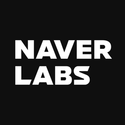
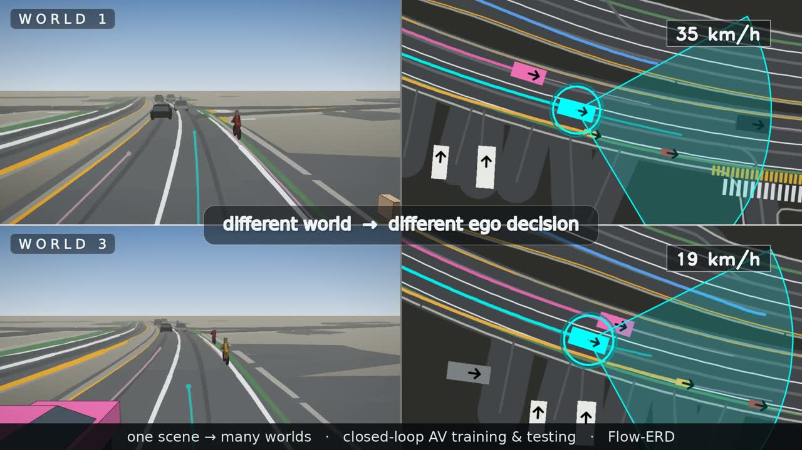
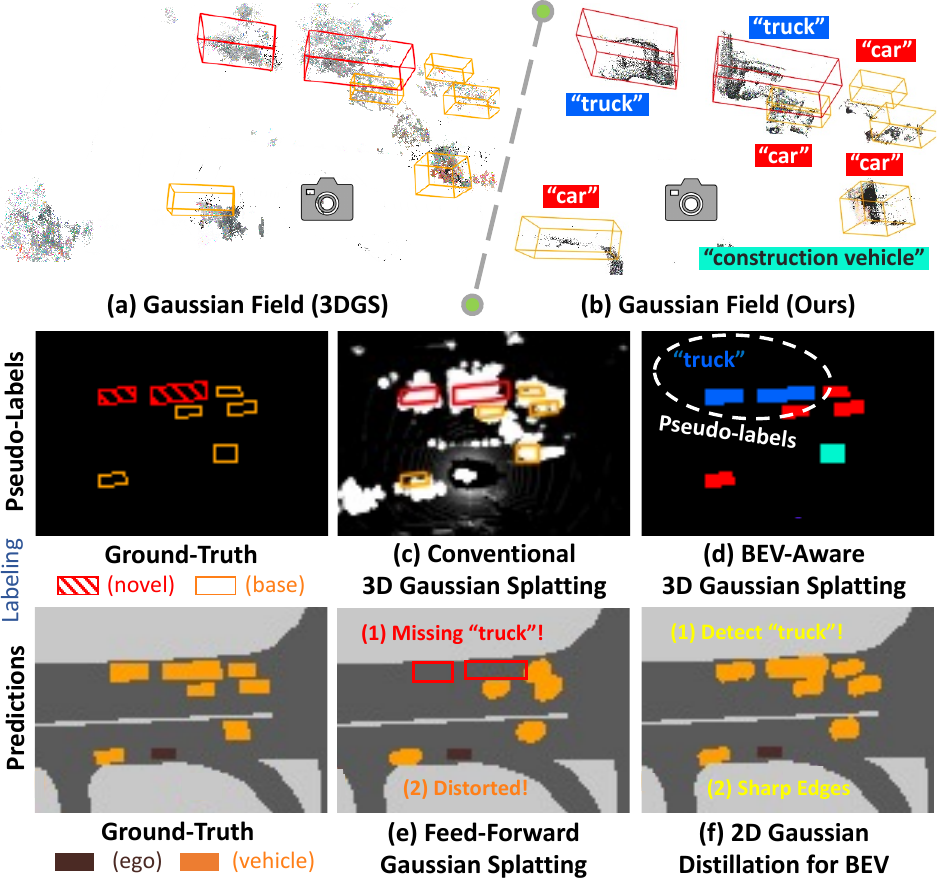
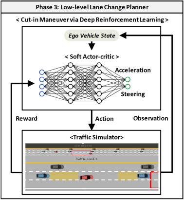
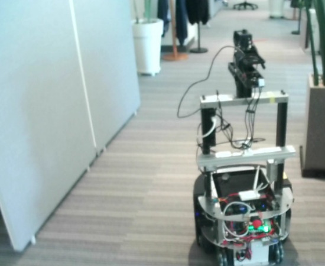

Seulbin Hwang
Generative Models for
Autonomous Driving & Robotics
I develop learning-based systems that perceive, simulate, and reason about complex interactive environments. My current research focuses on generative multi-agent traffic simulation, flow matching, and closed-loop learning, toward world models for autonomous driving and robotics.
Researcher at NAVER LABS
News
Recent updates
- 🏆 Our recent paper Flow-ERD ranked 1st on the official WOSAC 2025 Sim Agents Challenge leaderboard.
- Flow-ERD preprint and project page released.
- OVBEVSeg preprint released.
Featured research
One scene, many plausible worlds.
#1 WOSAC 2025 Test Benchmark
2026 preprint
Flow-ERD
Agent-type Aware Flow Matching with Entropy-Regularized Distillation for Diverse Traffic Simulation
A generative multi-agent traffic simulator that jointly improves closed-loop realism and diversity through agent-type-aware flow matching and entropy-regularized distillation.
Co-first author with Kiyoung Om
- RMM
- 0.7878
- Benchmark
- #1
- Core idea
- Realism + diversity
Research directions
Building systems that understand and simulate interactive worlds.
Generative World Modeling & Simulation
Learning generative models of interactive environments for realistic, diverse, and controllable closed-loop simulation.
Flow-ERDOpen-World 3D Perception
Recognizing previously unseen objects while preserving geometric consistency and efficient inference for autonomous systems.
OVBEVSegSafe Decision-Making & Planning
Developing policies that account for interaction, uncertainty, and risk in autonomous navigation and driving.
Selected workSelected publications
Research across simulation, perception, and planning.



Autonomous Vehicle Cut-In Algorithm for Lane-Merging Scenarios via Policy-Based Reinforcement Learning Nested Within Finite-State Machine
A structured driving policy that combines interpretable state transitions with learned decision-making for interactive lane merging.
Venue: IEEE Transactions on Intelligent Transportation Systems.
